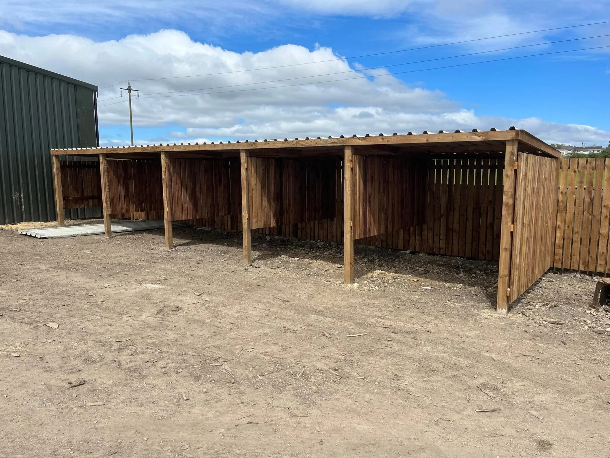

PJ FENCING & GROUNDCARE
Garden & timber projects
Explore timber shelters, garden boundaries and lawn projects from the PJ portfolio.
PJ FENCING & GROUNDCARE
More possibilities outdoors.
Tell us how you want to use the space, share photos and approximate dimensions, and mention any existing features you want to keep.
Discuss your project →FROM THE PORTFOLIO
Explore the details.
LET’S TALK OUTDOORS
Your project.
Our next conversation.
Tell PJ what you want to change. Send your postcode, photographs and a few details to discuss your fencing, decking or garden work.
PJ FENCING & GROUNDCARE
Ready to get
your garden sorted?
Talk to PJ about your fencing, decking or groundcare project.